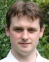

|
| Anil Madhavapeddy Principal Investigator |
 |
| Alan Mycroft Principal Investigator |
 |
| Ian Leslie Principal Investigator |
 |
| Jon Crowcroft Principal Investigator |
 |
| Amir Chaudhry Program Manager |
 |
| Leo White Research Associate |
|  |
| Jeremy Yallop Senior RA |
 |
| Stephen Dolan PhD candidate |
 |
| Balraj Singh Visitor |
 |
| Heidi Howard Research Assistant |
 |
| Raphael Proust PhD Student |
 |
| Vsevolod Stakhov PhD Student |
 |
| David Sheets Research Assistant |
 |
| Thomas Gazagnaire Senior RA |
 |
| Richard Mortier Lecturer |
 |
| Gregory Tsipenyuk PhD Student |
 |
| Magnus Skjegstad Research Associate |
 |
| Thomas Leonard Senior RA |
 |
| KC Sivaramakrishnan Research Associate |